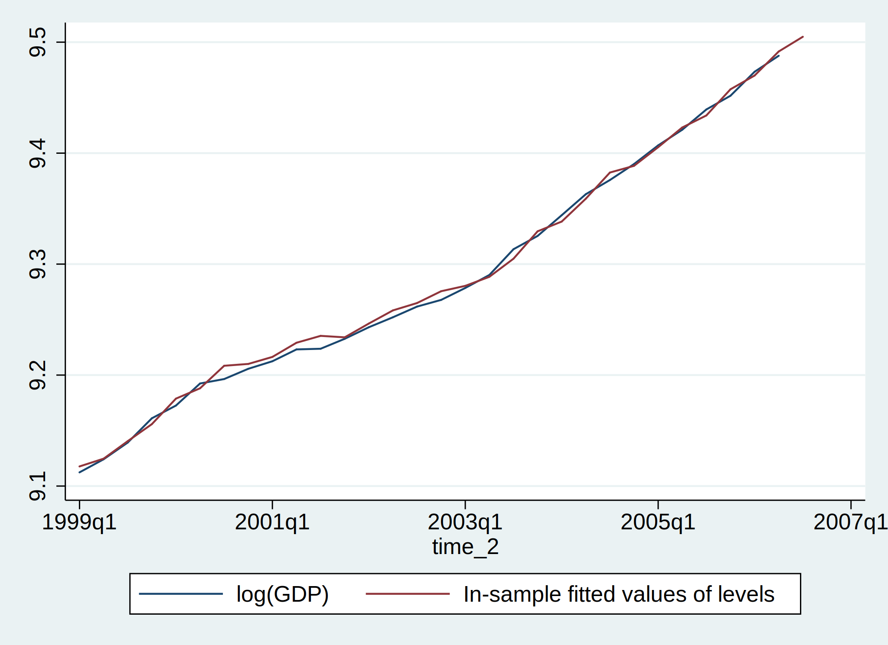
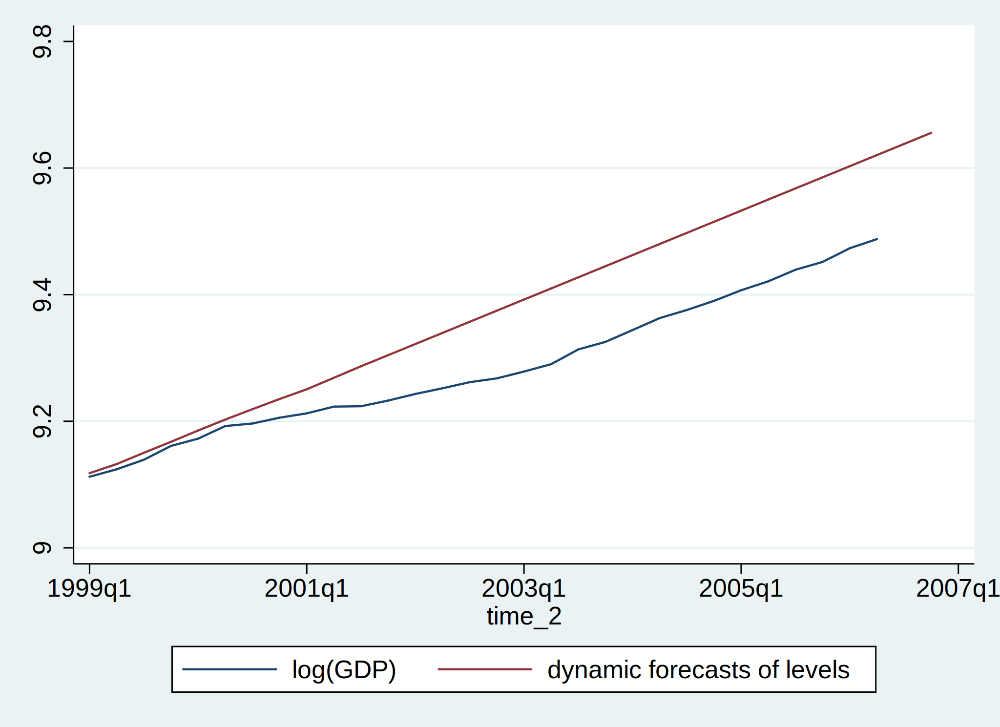
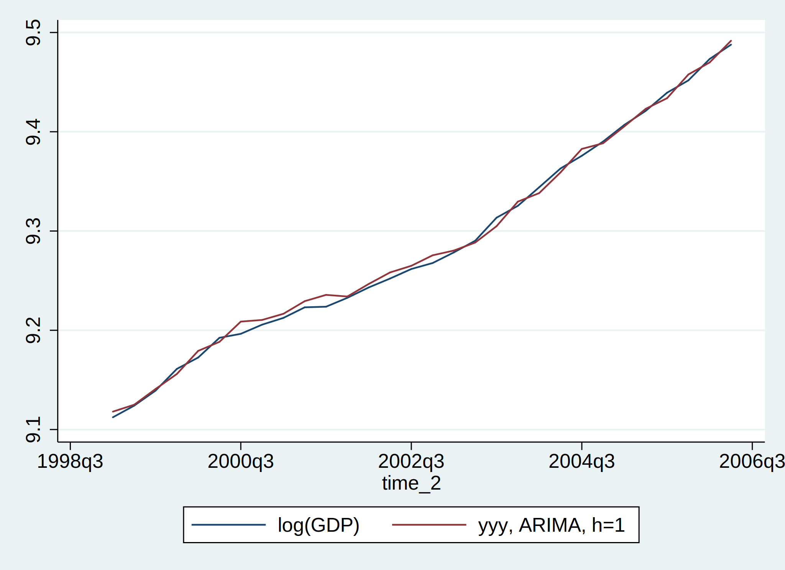
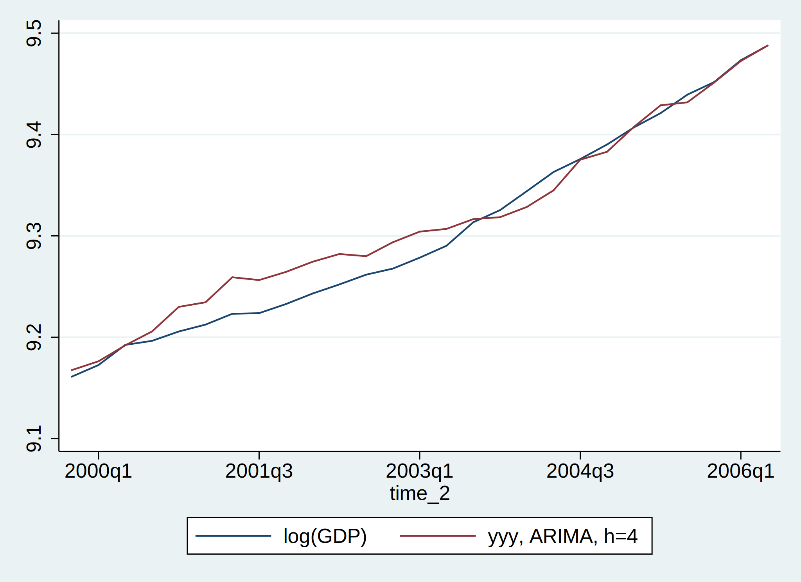

6 Forecasting
6.1 In-sample fitted values
/* use full sample for estimation */
/* arima d.yyy, arima(1,0,1) */
arima d.yyy, ma(1 2 4 10 11)
/* arima d2.yyy, arima(1,0,1) */(setting optimization to BHHH)
Iteration 0: log likelihood = 660.10946
Iteration 1: log likelihood = 660.45577
Iteration 2: log likelihood = 660.51453
Iteration 3: log likelihood = 660.52955
Iteration 4: log likelihood = 660.53352
(switching optimization to BFGS)
Iteration 5: log likelihood = 660.5347
Iteration 6: log likelihood = 660.53524
Iteration 7: log likelihood = 660.53526
ARIMA regression
Sample: 1957q2 - 2006q2 Number of obs = 197
Wald chi2(5) = 58.32
Log likelihood = 660.5353 Prob > chi2 = 0.0000
------------------------------------------------------------------------------
| OPG
D.yyy | Coef. Std. Err. z P>|z| [95% Conf. Interval]
-------------+----------------------------------------------------------------
yyy |
_cons | .0168866 .0012613 13.39 0.000 .0144144 .0193588
-------------+----------------------------------------------------------------
ARMA |
ma |
L1. | .2919739 .0586594 4.98 0.000 .1770036 .4069442
L2. | .146004 .0698232 2.09 0.037 .009153 .282855
L4. | .1824151 .0615452 2.96 0.003 .0617886 .3030415
L10. | .1718678 .063352 2.71 0.007 .0477002 .2960354
L11. | .2708313 .076412 3.54 0.000 .1210665 .4205961
-------------+----------------------------------------------------------------
/sigma | .0084366 .0003307 25.51 0.000 .0077885 .0090847
------------------------------------------------------------------------------
Note: The test of the variance against zero is one sided, and the two-sided
confidence interval is truncated at zero.cap drop y_fit dy_fit
predict y_fit, y
predict dy_fit, xb
label var y_fit "In-sample fitted values of levels"
label var dy_fit "In-sample fitted values of differences" | time y_fit dy_fit |
|------------------------------|
1. | 1957Q1 . .0168866 |
2. | 1957Q2 6.142008 .0168866 |
3. | 1957Q3 6.142532 .0130461 |
4. | 1957Q4 6.160923 .0158793 |
5. | 1958Q1 6.143454 .0089719 |
|------------------------------|
6. | 1958Q2 6.122191 .0040943 |
+------------------------------+
cap drop y_error mse rmspe mppe mappe
gen y_error=y_fit-yyy
/* compute the forecast evaluation statistics for post-1999Q1 sample */
replace y_error=. if time_2<tq(1999q1)
egen mse=mean(y_error^2)
gen rmspe=sqrt(mse)
egen mppe=mean(y_error/yyy)
egen mappe=mean(abs(y_error/yyy)) | rmspe mppe mappe |
|--------------------------------|
1. | .0054047 .0002028 .0004999 |
+--------------------------------+6.2 Dynamic/Extrapolation/Recursive forecasts
- estimation sample is fixed as (1957q1, 1998q4), forecast horizon ranges from 1 to 30
- dynamic forecasts start with 1999q1
/* use full sample for estimation */
/* arima d.yyy if tin(,1998q4), arima(1,0,1) */
arima d.yyy if tin(,1998q4), ma(1 2 4 10 11)
/* arima d2.yyy if tin(,1998q4), arima(1,0,1) */(setting optimization to BHHH)
Iteration 0: log likelihood = 551.48788
Iteration 1: log likelihood = 551.58321
Iteration 2: log likelihood = 551.60347
Iteration 3: log likelihood = 551.60837
Iteration 4: log likelihood = 551.60985
(switching optimization to BFGS)
Iteration 5: log likelihood = 551.61038
Iteration 6: log likelihood = 551.61069
Iteration 7: log likelihood = 551.61072
ARIMA regression
Sample: 1957q2 - 1998q4 Number of obs = 167
Wald chi2(5) = 44.93
Log likelihood = 551.6107 Prob > chi2 = 0.0000
------------------------------------------------------------------------------
| OPG
D.yyy | Coef. Std. Err. z P>|z| [95% Conf. Interval]
-------------+----------------------------------------------------------------
yyy |
_cons | .0175587 .001431 12.27 0.000 .0147539 .0203634
-------------+----------------------------------------------------------------
ARMA |
ma |
L1. | .2914819 .0661621 4.41 0.000 .1618066 .4211572
L2. | .1317165 .080453 1.64 0.102 -.0259686 .2894015
L4. | .1685373 .0698476 2.41 0.016 .0316385 .3054361
L10. | .1644854 .0720823 2.28 0.022 .0232067 .305764
L11. | .2766332 .0868364 3.19 0.001 .1064369 .4468294
-------------+----------------------------------------------------------------
/sigma | .0088642 .0003882 22.83 0.000 .0081033 .009625
------------------------------------------------------------------------------
Note: The test of the variance against zero is one sided, and the two-sided
confidence interval is truncated at zero.cap drop y_dyn dy_dyn /* forecasts start in 1999Q1 */
predict y_dyn, y dynamic(tq(1999q1))
/* If dynamic() is not specified, actual values are used for lagged values of y(t) */
/* to produce one-step-ahead forecasts. */
predict dy_dyn, xb dynamic(tq(1999q1))
label var y_dyn "dynamic forecasts of levels"
label var dy_dyn "dynamic forecasts of differences" | time y_dyn dy_dyn |
|------------------------------|
169. | 1999Q1 9.118066 .0182319 |
170. | 1999Q2 9.132398 .0143322 |
171. | 1999Q3 9.15017 .0177723 |
172. | 1999Q4 9.167582 .0174116 |
173. | 2000Q1 9.185462 .0178808 |
|------------------------------|
174. | 2000Q2 9.202712 .0172498 |
175. | 2000Q3 9.219089 .016376 |
176. | 2000Q4 9.235211 .0161228 |
177. | 2001Q1 9.250524 .0153125 |
178. | 2001Q2 9.268696 .0181724 |
|------------------------------|
179. | 2001Q3 9.286902 .018206 |
180. | 2001Q4 9.304461 .0175587 |
181. | 2002Q1 9.32202 .0175587 |
182. | 2002Q2 9.339578 .0175587 |
183. | 2002Q3 9.357137 .0175587 |
|------------------------------|
184. | 2002Q4 9.374695 .0175587 |
185. | 2003Q1 9.392254 .0175587 |
186. | 2003Q2 9.409813 .0175587 |
187. | 2003Q3 9.427371 .0175587 |
188. | 2003Q4 9.44493 .0175587 |
|------------------------------|
189. | 2004Q1 9.462488 .0175587 |
190. | 2004Q2 9.480047 .0175587 |
191. | 2004Q3 9.497605 .0175587 |
192. | 2004Q4 9.515164 .0175587 |
193. | 2005Q1 9.532723 .0175587 |
|------------------------------|
194. | 2005Q2 9.550282 .0175587 |
195. | 2005Q3 9.567841 .0175587 |
196. | 2005Q4 9.585399 .0175587 |
197. | 2006Q1 9.602958 .0175587 |
198. | 2006Q2 9.620517 .0175587 |
|------------------------------|
199. | 2006Q3 9.638075 .0175587 |
200. | 2006Q4 9.655634 .0175587 |
+------------------------------+
cap drop y_error mse rmspe mppe mappe
gen y_error=y_dyn-yyy
replace y_error=. if time_2<tq(1999q1)
egen mse=mean(y_error^2)
gen rmspe=sqrt(mse)
egen mppe=mean(y_error/yyy)
egen mappe=mean(abs(y_error/yyy)) | rmspe mppe mappe |
|------------------------------|
1. | .0936204 .008643 .008643 |
+------------------------------+6.3 1-step-ahead forecasts
- estimation sample starts with (1957q1, 1998q4), then expands with one additonal observation at a time, forecast horizon is fixed as h=1
- reestimate the model with each additional observation
cap drop y_hat
gen y_hat = .
cap drop y_hat_table
gen y_hat_table = .
label var y_hat_table "yyy, ARIMA, h=1"set more off
local h = 1 /* set the h for h-step-ahead-forcast */
local i=168 /* set last obs of estimation sample */
local l=`i'+`h'
local k=198 /* set last obs of forecast sample */
while `i' <=`k'-`h' {
/* quietly arima d.yyy in 1/`i', arima(1,0,1) change model as needed */
quietly arima d.yyy in 1/`i', ma(1 2 4 10 11)
/* quietly arima d2.yyy in 1/`i', arima(1,0,1) */
cap drop y_hat
quietly predict y_hat, y
local j=`i'+`h'
/* list time y_hat in `j'/`j' */
quietly replace y_hat_table = y_hat in `j'/`j'
local i=`i'+1
}
list time yyy y_hat_table in `l'/`k'
tsline yyy y_hat_table in `l'/`k' | time yyy y_hat_~e |
|------------------------------|
169. | 1999Q1 9.112352 9.118066 |
170. | 1999Q2 9.12414 9.125053 |
171. | 1999Q3 9.13922 9.140858 |
172. | 1999Q4 9.161098 9.155983 |
173. | 2000Q1 9.172576 9.179264 |
|------------------------------|
174. | 2000Q2 9.192461 9.18838 |
175. | 2000Q3 9.196454 9.208769 |
176. | 2000Q4 9.205689 9.210423 |
177. | 2001Q1 9.212488 9.216632 |
178. | 2001Q2 9.223148 9.22934 |
|------------------------------|
179. | 2001Q3 9.22376 9.235682 |
180. | 2001Q4 9.232718 9.23404 |
181. | 2002Q1 9.243127 9.246629 |
182. | 2002Q2 9.252115 9.258266 |
183. | 2002Q3 9.261737 9.264979 |
|------------------------------|
184. | 2002Q4 9.267769 9.275546 |
185. | 2003Q1 9.278522 9.280374 |
186. | 2003Q2 9.290241 9.288405 |
187. | 2003Q3 9.313447 9.304872 |
188. | 2003Q4 9.325409 9.32963 |
|------------------------------|
189. | 2004Q1 9.344075 9.338203 |
190. | 2004Q2 9.363002 9.359034 |
191. | 2004Q3 9.375804 9.382712 |
192. | 2004Q4 9.390183 9.388437 |
193. | 2005Q1 9.406992 9.405504 |
|------------------------------|
194. | 2005Q2 9.421096 9.423127 |
195. | 2005Q3 9.439346 9.43382 |
196. | 2005Q4 9.451756 9.457699 |
197. | 2006Q1 9.473351 9.469869 |
198. | 2006Q2 9.487767 9.491684 |
+------------------------------+
(file plot35.svg written in SVG format)
cap drop y_error mse rmspe mppe mappe
gen y_error=y_hat_table-yyy
egen mse= mean(y_error^2)
gen rmspe= sqrt(mse)
egen mppe=mean(y_error/yyy)
egen mappe=mean(abs(y_error/yyy)) | rmspe mppe mappe |
|-------------------------------|
1. | .005529 .0002152 .0005132 |
+-------------------------------+6.4 4-step-ahead forecasts
- estimation sample starts with (1957q1, 1998q4), then expands with one additonal observation at a time, forecast horizon is fixed as h=4
- reestimate the model with each additional observation
cap drop y_hat
gen y_hat = .
cap drop y_hat_table
gen y_hat_table = .
label var y_hat_table "yyy, ARIMA, h=4"set more off
local h = 4 /* set the h for h-step-ahead-forcast */
local i=168 /* set last obs of estimation sample */
local t0=tq(1998q4) /* set ending date of estimation sample */
local l=`i'+`h'
local k=198 /* set last obs of forecast sample */
while `i' <=`k'-`h' {
/* quietly arima d.yyy in 1/`i', arima(1,0,1) change model as needed */
quietly arima d.yyy in 1/`i', ma(1 2 4 10 11)
/* quietly arima d2.yyy in 1/`i', arima(1,0,1) */
cap drop y_hat
quietly predict y_hat, y dynamic(`t0'+1)
local j=`i'+`h'
/* list time y_hat in `j'/`j' */
quietly replace y_hat_table = y_hat in `j'/`j'
local i=`i'+1
local t0=`t0'+1
}
list time yyy y_hat_table in `l'/`k'
tsline yyy y_hat_table in `l'/`k' | time yyy y_hat_~e |
|------------------------------|
172. | 1999Q4 9.161098 9.167582 |
173. | 2000Q1 9.172576 9.1763 |
174. | 2000Q2 9.192461 9.192025 |
175. | 2000Q3 9.196454 9.205711 |
176. | 2000Q4 9.205689 9.229968 |
|------------------------------|
177. | 2001Q1 9.212488 9.234512 |
178. | 2001Q2 9.223148 9.259163 |
179. | 2001Q3 9.22376 9.256402 |
180. | 2001Q4 9.232718 9.264427 |
181. | 2002Q1 9.243127 9.274498 |
|------------------------------|
182. | 2002Q2 9.252115 9.282114 |
183. | 2002Q3 9.261737 9.27998 |
184. | 2002Q4 9.267769 9.293777 |
185. | 2003Q1 9.278522 9.304202 |
186. | 2003Q2 9.290241 9.306887 |
|------------------------------|
187. | 2003Q3 9.313447 9.316544 |
188. | 2003Q4 9.325409 9.318444 |
189. | 2004Q1 9.344075 9.328505 |
190. | 2004Q2 9.363002 9.344928 |
191. | 2004Q3 9.375804 9.375166 |
|------------------------------|
192. | 2004Q4 9.390183 9.382996 |
193. | 2005Q1 9.406992 9.407466 |
194. | 2005Q2 9.421096 9.428817 |
195. | 2005Q3 9.439346 9.431775 |
196. | 2005Q4 9.451756 9.451321 |
|------------------------------|
197. | 2006Q1 9.473351 9.472584 |
198. | 2006Q2 9.487767 9.487797 |
+------------------------------+
(file plot36.svg written in SVG format)
cap drop y_error mse rmspe mppe mappe
gen y_error=y_hat_table-yyy
egen mse= mean(y_error^2)
gen rmspe= sqrt(mse)
egen mppe=mean(y_error/yyy)
egen mappe=mean(abs(y_error/yyy)) | rmspe mppe mappe |
|--------------------------------|
1. | .0184706 .0010759 .0015318 |
+--------------------------------+